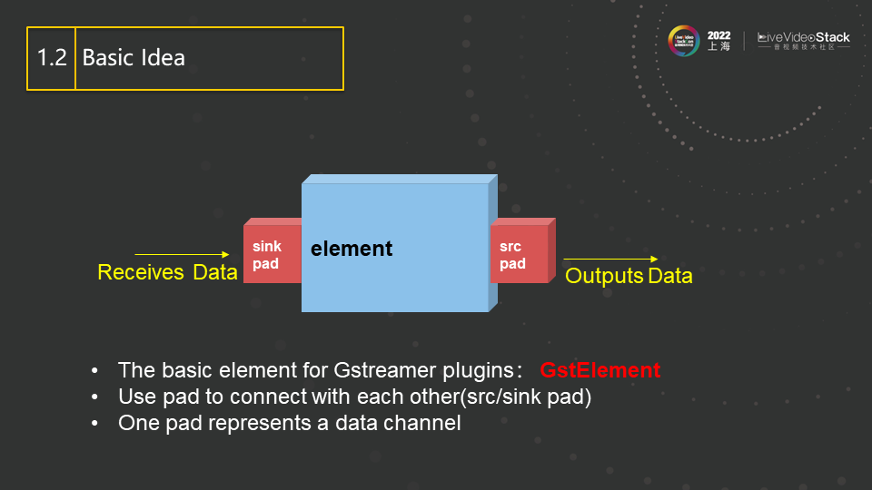
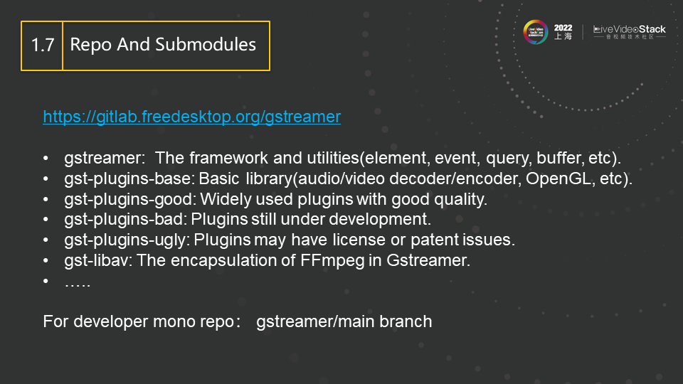
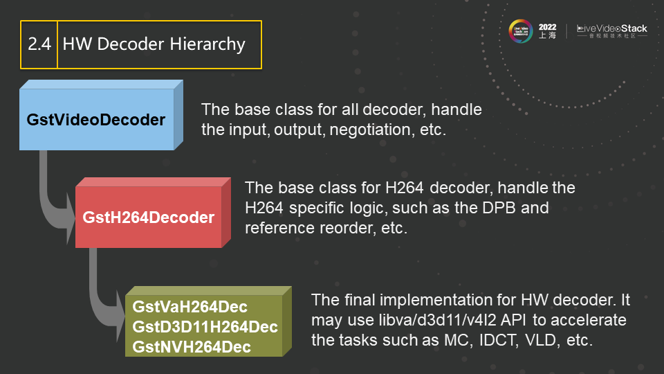
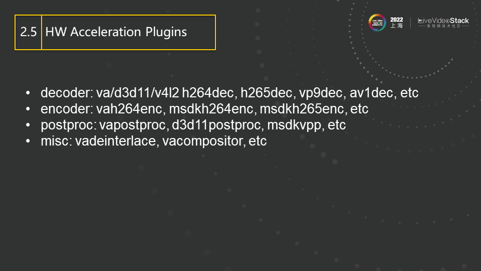
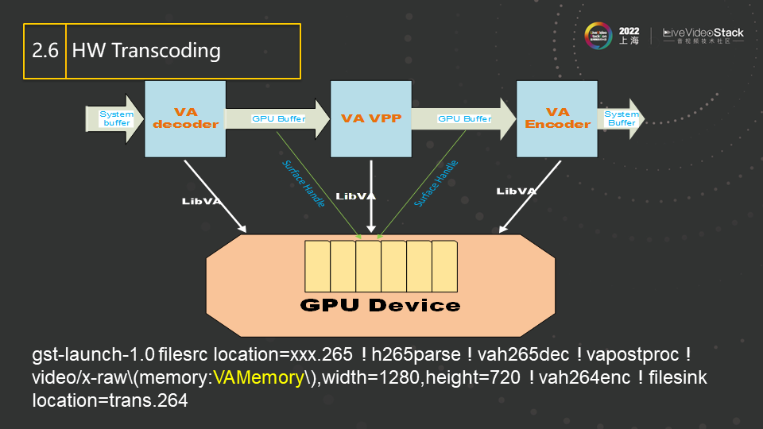
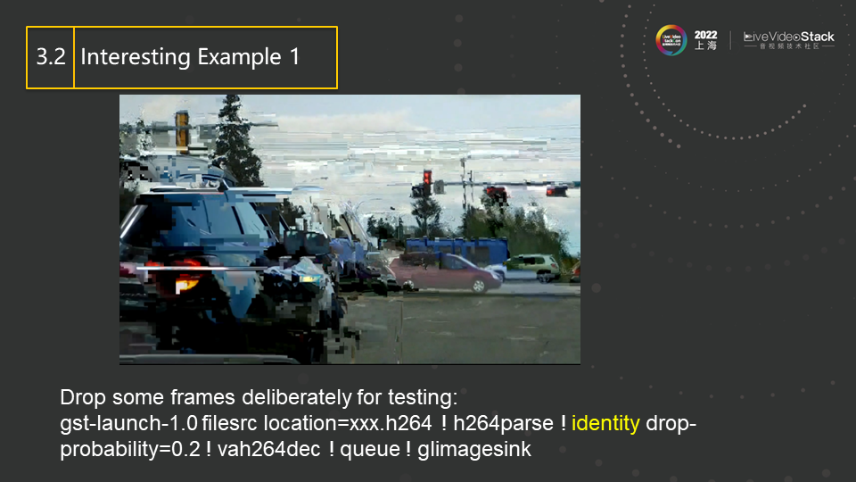
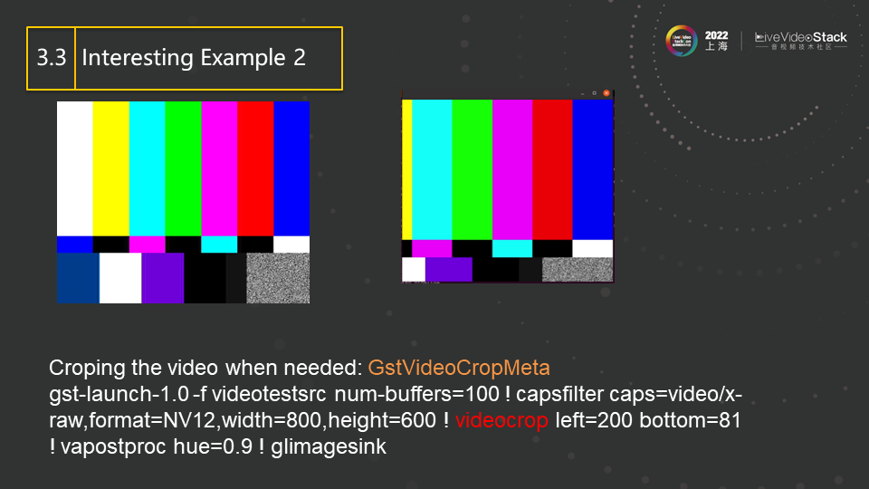
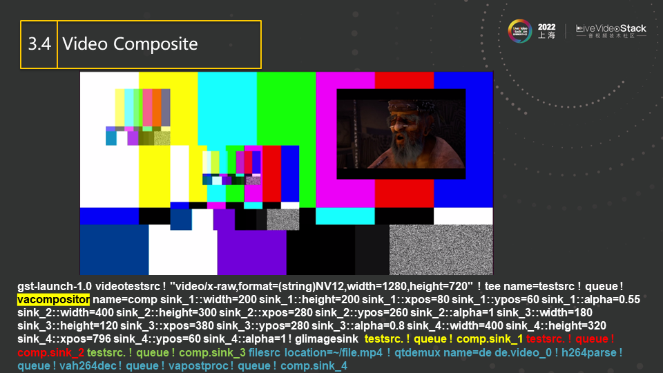
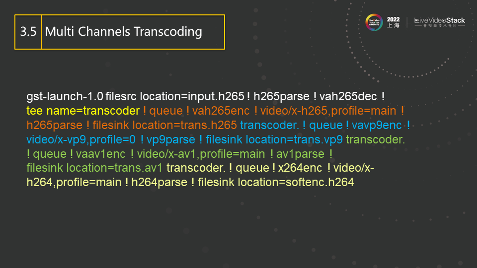
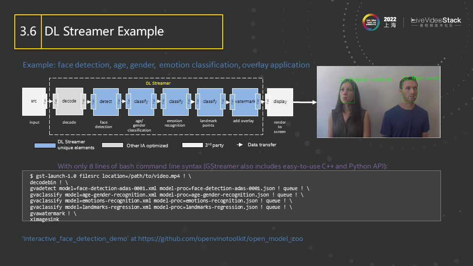

关于 Gstreamer 中的视频处理与硬件加速 –节选自《LiveVideoStackCon2022 上海站大会， 英特尔加速计算系统与图形部工程师何俊彦，Gstreamer 的框架和特点，视频的模块化处理，以及其硬件加速的实现与应用案例》
Basic Idea
这是 Gstreamer 中一个 element 的基本形式。两端的 pad 来负责输入和输出，而由当中的 element 来完成具体工作。比如一个 decoder，输入是 H264 的码流，输出则是 decoded 数据，也就是我们常说的视频帧，所以此处的 element 就可以实现为一个完整的 H264 的解码器。该解码器的实现可以是一个完整的内部实现，也可以封装已有的外部解码器来实现。比如，我们可以把 OpenH264 项目 build 成 library 的形式并适当封装，在此 element 中直接调用，从而实现该 H264 解码器插件的功能。
我们可以发现，这里的输入输出格式是非常随意的，甚至输入可以是 video，输出是 audio，这就使插件的设计有了更大更灵活的空间。比如我们录取了一个视频，视频里的每一帧都是拍的某本书的一页，于是我们可以设计这样一个 pipeline，其中一个 element 将 video 转换成 text，然后连接另一个 element，其接受 text 输入，并用语音将其全部读出并输出 audio，从而完成了将整本书转成 audio 的功能。这些 element 的设计方式在 Gstreamer 是被完全允许的。当然，FFmpeg 也能完成上述功能，但在提交代码到社区和 upstream 过程中会有遇到很大的麻烦和挑战，因为这种 video 转 text 或者 text 转 audio 的模式，在 FFmpeg 中并没有现成的归类，也许需要你提出新的 filter 类型或新的模式。 
这是更多 element 的类型，demuxer 对应 FFmpeg 里的 av input format，source element 对应于 FFmpeg 里的 URL，用来产生源输入，filter element 则对应于 FFmpeg 里的 filter。总的来说，这些内容有与 FFmpeg 相似的地方，但是会以 element 的形式进行管理，最后用 pipeline 将这些内容连接在一起，由第一个向最后一个推送数据。

在电子技术（特别是数字电路）中，数据选择器（英语：Data Selector），或称多路复用器（英语：multiplexer，简称：MUX）是一种可以从多个模拟或数字输入信号中选择一个信号进行输出的器件> 1。一个有 2^n 输入端的数据选择器有 n 个可选择的输入-输出线路，可以通过控制端来选择其中一个信号作为输出 1。数据选择器主要用于增加一定量的时间和带宽内的可以通过网络发送的数据量 1。它使> 多个信号共享一个设备或资源，例如一个模拟数字转换器或一个传输线，而不必给每一个输入信号配备一个设备。
数据选择器的抽象模型如下：首先，各个低速信道的信号通过**多路复用器（MUX，多工器）组合成一路可以在高速信道传输的信号。在这个信号通过高速信道到达接收端之后，再由分路器（DEMUX，解> 多工器）**将高速信道传输的信号转换成多个低速信道的信号，并且转发给对应的低速信道 1。在实际的通信工程应用里，多路复用器和分路器通常作为一个设备被一起生产和安装。作为发送数据的时> 候，这个设备就作为多路复用器，在接收数据的时候，这个设备就作为分路器 1。
数据选择器根据使用的技术可以分为：
- 时分复用（TDM）：高速信道根据时间划分成多个时隙供多个低速信道轮流使用，每个时隙内只能有一个低速信道占有高速信道的资源。
- 频分复用（FDM）：多路复用器将各个低速信道的信号通过调制分布到高速信道的不同频段，然后进行叠加，形成高速信道上传输的信号。在接收端，分路器一般通过带通滤波器分离各个频段，然后转发> 给对应的低速信道。
- 空分复用：使用多天线技术，通过波束成形技术将信号对准特定的发射源或接收站进行接收或发送。通过空分复用，多个发射源或接收站可以同时使用同一个频率。
- 码分复用（CDM）：采用扩频通信技术，各个低速信道可以在同一个地方同时使用相同的频率进行通信，不同的低速信道通过采用不同的地址码复用整个频段 1.
这是一个简单 pipeline 的例子，所有的 element 都会放在 pipeline 里面，然后由 source 发起数据并向 demuxer（相当于 FFmpeg 里的 av input format）推送，demuxer 对数据进行解交织，然后一路传送 audio，一路传送 video，在各自经过 decoder 解码后，最后分别通过 audio-sink 来播放出 audio，通过 video-sink 来播放出 video。上述内容就是一个最经典、最简单的 Gstreamer 的 pipeline，pipeline 相当于一个大的容器，里面每一个元素都是 element，也就是 plugin（插件）。

element 之间是有交互的，上下游 element 之间可以通过 Event（事件）来同步状态， 而通过 query（询问）来同步信息。
举个 Event 的例子，有一种 Event 叫做 EOS（End Of Stream），现在比如当前 pipeline 正在录制一个 H264 的视频，其中有两个 element，上游是 camera，下游是 H264 的 encoder。由于 encoder 在编码过程中要产生 reorder，所以 camera 采集的帧会被 cache 在 encoder 的 stack 里，而不会马上产生编码输出，直到一组 GOP（Group of Pictures）完成， encoder 才会统一为这一组 GOP 进行编码并产生输出。所以当 camera 采集完成最后一帧时，就需要发送一个 EOS Event 到下游，表示流已完成，不会再有后续帧产生。而 encoder 收到此 Event 后，即使最后一个 GOP 没有完成，也会将所有已经 cache 的帧进行编码，产生最后的编码输出，确保不至于漏掉最后几帧。
再举个例子来说明 Query，若我们有一个 display，可以在屏幕上显示 video（假设只支持 RGB 格式），而 decoder 的输出大多是 NV12 或者 I420 格式的。所以，我们要在 decoder 跟 display 之间接一个 videoproc(video post processing 视频后处理)的 element 来进行格式转换。在此，我们并不需要指定 videoproc 的输入输出格式，它会自动的通过 query 的方式询问上下游所支持的格式，从而判断出其要做一个 NV12→RGB 的格式转换。这种方式也就是 Gstreamer 里面的的自动协商。

Gstreamer 中的 element 之间参数自动协商的结果最后会表示成一个 caps，中文称为能力，其内容可能包含分辨率，数据格式，帧率等等。比如一个音频播放器既支持原始 audio 格式又支持 mp3 压缩格式的播放，所以在它的 caps 中就有 raw 和 mp3 两个选项，表明它可接收这两种格式的输入。而 decoder 的输出格式是固定的，它由码流里的内容所决定。所以在连接这两个 element 时，要找到两者的交集，得到的结果就是最终所要传输数据的 caps（即图中红色方框的部分），也就是两者协商一致的参数或参数集。如图中，协商结果为 mp3 格式、双通道、码率为 16000 的 audio。自此以后，decoder 需要向下游传输红色方框里规定格式的 audio，不能自行改变。这种能力的自动协商，基本不需要用户的指定，而是由两个 element 之间自动协商完成。 
关于 source code 的分布结构，Gstreamer 也采用了比较分散的方式，以方便插件的开发。与 FFmpeg 把所有的内容放在同一个 repo 里不同，Gstreamer 将其各个模块根据功能分为了多个 repo 分别存放。其框架和基本库分别被方在 gstreamer 和 gst-plugins-base 这两个 repo 中，其他的 repo 存放各种插件，并只依赖于这两个 repo，互相之间没有依赖。其中 gst-plugins-good 主要包含比较成熟的插件，gst-plugins-bad 则主要包含正在开发的插件，gst-plugins-ugly 不是指 code 质量差，而是主要放置了一些有 license 问题的插件，用户可以根据地域和法规，进行选择性的规避或安装。
经常会有人提到 FFmpeg 不能和 upstream 的 code 进行同步的问题。这是因为做具体工程时，我们的开发模式多是基于一个固定的 FFmpeg 版本做修改，而向社区回馈这些修改并被 merge 的难度又非常大， 所以就只能维护一个私有的 FFmpeg repo 并不停迭代。而与此同时，upstream 的开发者也没闲着，不断的给官方的 FFmpeg 添加各种新的 feature 和 bug fixing。双方从此分叉， 久而久之，等你再想 rebase 回到官方的 FFmpeg，体验其新功能时，发现已经是不可能。相反，Gstreamer 就可以有效的规避这一点。在开发一个新的插件时，开发者不需要在已有的 repo 里进行 commit，而完全可以新建一个 repo（甚至不需要开源）并由自己来维护，只要这个新建的 repo 依赖于刚才提到的两个基本库即可。而这两个基本库的升级是非常平稳的，兼容性也很好，因此可以随时进行升级，与最新的 upstream 保持同步。而由于所有的 repo 都只依赖于基本库，所以各个 repo 之间的插件可以无阻碍的进行协同工作，这就解决了用固定库做私有库的问题。
02 The video Processing And Hardware Acceleration

接着，我们介绍在 Gstreamer 里如何处理 video。图中展示的是各种 video 相关的插件，主要分为八大类。
首先是 demux，用于解交织，分开一个文件中的各路 audio 和 video，它包括 qtdemux，matroskademux 等；mux 与 demux 功能相反，用于加交织，比如 matroskamux 能将 H264 的 video 码流和 AC3 的 audio 码流根据时间戳交织在一起，形成 MKV 文件。
parse 相当与码流过滤器，比如可以用它来找码流中帧的边界（对于 decoder 很重要，decoder 多需要一个完整的帧数据来解码，而不是一帧中的部分 slice）。另外，它也可以做一些码流语法层格式的转换，比如从 DVD 中的 H264 帧没有前导码，但空间或 cable 里传输的 H264 需要前导码进行同步，所以若想将当前空间传输里的码流录入 DVD 里或转成 RTXP 格式时，就需要用 parse 将其前导码去掉。
decoder 和 encoder 即编解码器，不需解释。需要注意的是，Gstreamer 除了有内建的 encoder 和 decoder（即实现了一个完整的 SW 或 HW decoder 或 encoder），其还经常通过包装和 wrap 一些现有成熟的 codec project 的方式来实现。比如 FFmpeg 就被包装成了一个插件， 图中展示的 avdec_h265 就是通过 wrap 的方式来使用 FFmpeg 中的 H265 decoder，而 openh264dec 则是通过包装 openh264 工程得到。一些著名的 encoder 工程，比如 x264 和 x265 也被分别包装成了 x264enc，x265enc 插件。
当涉及到视频处理时，**硬件解码器（HW decoder）和软件解码器（SW decoder）**是两个重要的概念。让我为你详细解释一下：
硬件解码器（HW decoder）：
定义：硬件解码器是一种专门用于处理视频文件的硬件组件。它负责将视频解码，以便在设备上进行播放。 工作原理：硬件解码器通常由多媒体芯片组成，专门用于处理视频解码任务。它可以将视频文件解码为可供设备播放的格式。 优点：硬件解码器通常比 CPU 更擅长处理视频，因此可以实现更流畅的视频播放。 注意：硬件解码器的输出与软件解码器相同，但通常更节省电力和 CPU 资源。
软件解码器（SW decoder）：
定义：软件解码器也用于视频解码，但它的工作方式略有不同。它依赖于设备的处理器来执行解码任务。 工作原理：软件解码器使用 CPU 来处理视频解码，因此被称为“软件视频解码”。 性能：尽管软件解码器的性能逐渐提高，但它仍需要强大的处理器才能与硬件解码器的播放质量相媲美。
编码器（encoder）：
编码器是用于将原始视频数据编码为压缩格式（如 H.264 或 H.265）的组件。 硬件编码器（HW encoder）使用设备的硬件来执行编码任务，而软件编码器（SW encoder）则依赖于 CPU。 硬件编码器通常速度更快，但输出质量较低，而软件编码器则相反。
总之，硬件解码器和编码器通常更高效，但软件解码器和编码器在某些情况下也很有用，特别是在处理旧格式或特定需求的视频时。12
postproc 相当于 FFmpeg 里的 filter，主要支持各种 scale 转换和 color format 转换，以及高斯滤波，锐化等操作。
render 即渲染，可以理解为视频的输出。FFmpeg 里的 render 支持较少（据我所知只有 SDL），Gstreamer 就对这部分进行了扩展，包括 glimagesink（使用 OpenGL 的 3D 渲染），ximagesink（输出到 X），waylandsink（输出到 wayland）等，总体来说支持的比较完整。
其他还剩下一些杂项，包扩 deinterlace（场帧处理）、videorate（帧率转换）和 videocrop（视频截取）等。

这是一个简单的软件转码的 pipeline 实例，其首先使用 AV1 的 decoder 将 AV1 的码流解出，然后使用 x264enc 将其压缩，最后保存为 H264 文件。该图是用 Gstreamer 自带的工具生成的，图中绘制了 pipeline 中的每一个 element，element 之间的关系以及 element 之间协商和传输的数据格式（即前面提到的 caps）。

接着介绍基于硬件加速的 Gstreamer 的插件。首先来看 VAAPI，VAAPI 是由 Intel 提出的一套硬件加速 API。MediaSDK 则是对 VAAPI 的进一步封装，使用户更方便使用（MediaSDK 也经常被称作 QSV）。D3D11/12 主要用于在 Windows 上提供加速。V4L2 主要基于 ARM 平台，其硬件加速的 driver 通常会实现在 kernel 里。Vulkan 是最近提出的，此外还有 Cuda 最近也补充了关于视频硬件加速的 API。 
接着介绍一下硬件加速的具体实现。以 decoder 为例，一个完整的 decoder，其大致可以分为状态维护（或者叫状态机）和解码运算两部分。状态维护包括比如 SPS 和 PPS 中参数的检测和设定，参考帧的维护和重排列，以及缺帧等常见错误的处理等， 而解码运算则包括比如 VLD、MC 等。前者逻辑性强但运算量很少，而后者逻辑性很少却要求大量的计算，所以，大多硬件加速的 API 设计都会针对后者，而把逻辑性较强的状态维护部分留给软件来实现。在 Gstreamer 中亦是如此， 并结合了面向对象的思想， 把所有 decoder 都需要的部分（比如输入输出管理，帧的 cache 机制等）放在基类中， 把 H264 特定的逻辑（比如 H264 的参考帧管理，Interlaced 码流中上下场的管理等）抽象到 H264 decoder 中，而子类 GstVaH264Dec、GstD3D11H264Dec 和 GstNVH264Dec 则调用具体的 HW 加速 API 来进行解码运算部分的加速。 
这些是 Gstreamer 里已有的硬件加速的插件，其囊括了几乎所有市面上流行的 codec，如 h264、h265、vp9，av1 等。插件的名字一般采用 加速库名+codec 名+功能 来命名。比如 vah264dec 就是基于 VAAPI 加速的 H264 decoder。当然，除此之外，还有基于硬件的视频后处理插件 vapostproc，vadeinterlace，以及多路视频复合插件 vacompositor 等。 
这张图说明 Gstreamer 在编解码过程中如何使用硬件。首先，decoder 会将码流中需要解码的 data 从主存拷贝到 GPU 的 memory 中，并驱使 GPU 运行解码运算生成解码图像（因此，生成的解码图像也自然就在 GPU 的 memory 中，我们也经常也叫 surface）。之后的 VPP（Video Post Processing）插件会以此 surface 作为源，在 GPU 上运行 color conversion 和 scaling 等算法，生成一块新的 surface 并送给 encoder。最后，encoder 同样会在 GPU 上运行编码算法，从而产生新的码流。图中的各个插件之间只传输 GPU 的 surface handle，没有内存拷贝，这样就实现了整条 pipeline 在 GPU 上的全加速。
03 Use Gstreamer: Pipelines And Examples

我们现在来举一些实际的 Gstreamer 的例子。首先是用命令行来放一个文件，视频输出下方即是该完整的命令行（一个完整的 gst-launch 也通常会被称为一个 pipeline）。该文件是一个 MP4 格式文件，qtdemux 会解交织该文件，送出两路数据，一路 video（图中蓝色部分），一路 audio（图中绿色部分）。 
再看一个比较有趣的例子。identity（图中黄色部分）是一个比较有意思的插件，这个插件有一个属性是可以让其随意丢掉 x%的数据。我们正好可以用这个插件来测试 decoder 的稳定性、鲁棒性。这里假定 x 是 20，也就是丢失 20%的帧。如图，因为部分数据有丢失，会造成部分解码错误或者 reference 帧丢失，所以解出有 garbage 的图像是在意料之中，也是可以接受的，但不能接受的是解码程序 crash。图中是丢掉 20%的数据的效果，若丢掉 80%的数据，那会造成只有少部分图片残影被显示， 但同样的，一个稳定强大的 decoder 在此情况下依然不能 crash。 
这是一个称为 crop 的 element/plugin，它可以用来做视频裁剪，图中右边的图像就是对左边的图像裁剪掉其左边的 200 像素和下边的 81 像素获得的。这个功能本省并不稀奇，这里需要注意的是，Gstreamer 中，该 videocrop 插件会自动进行一些性能优化。在上面的命令行中，videocrop 下游的 vapostproc 插件，在进行 hue 转换的时候，本身就可以设置 src image 的有效区域，而这就相当于进行了一次隐含的 crop 操作。所以，在此处，videocrop 不会进行真正的 crop 操作，而是只把要 crop 的范围作为 meta data 传送给下游即可。这种智能的性能优化，也正是通过 query 机制，询问下游的能力而做出的。 
这是之前提到的 compositer 插件，它的功能就是能将各路 video 交织到一起。图中一共有五路 video 被合并到了一起。我们可以指定每一路的位置、alpha 值和分辨率，让其出现在我们想要的位置。命令行中，第一路没有显式指定参数，所以其会整屏显示，也就是该图的底图，而黄色内容表示第二路，红色内容表示第三路，绿色内容表示第四路，蓝色内容表示第五路，其中第五路是 video 解码输出。各路输出的位置如图中所示。显然，compositer 很适用于安防的监控场景，将每个摄像头的内容组合拼接到一起，即多输入单输出，即可得到一个经典的安防监控画面。 
这是一个多 channel 转码的例子。H265 的解码（黄色部分）的输出会被插件 tee 以只读的方式分别送给 4 路 encoder，分别是使用 VAAPI 加速的 H265 编码器（橙色部分），使用 VAAPI 加速的 VP9 编码器（蓝色部分），使用 VAAPI 加速的 AV1 编码器（绿色部分）和软件的 x264 的编码器。这条 pipeline 可以同时完成 1 对 4 的转码，而解码只需一次，比较省资源。 
这是一个使用 DL Streamer 进行人脸识别的例子。其中蓝色方块表示 DL Streamer 的插件。完成 decode 后，DL Streamer 的插件会做 face detection、age/gender classification、 emotion recognition（即识别表情、年龄）等，然后会做 watermark，其将传输下来的前面每一级识别的信息数据画上去，最终传给 display 进行显示。Gstreamer 的方便之处在于，可以随意添加、删除或修改上述流程中的任一级，比如在脚本里删掉 face detection 或 emotion recognition，就不会再做 face detection 或 emotion recognition。

这是一个识别 audio 的例子。完成 decode 后，经过 audio resample 和 audio convert 这两个基本的 audio 处理，然后将内容传送给 audio detect 等 deep learning 插件，最后识别出来图中是狗在叫。完成 decode 后的另一路会做 object detection，识别出狗的大概位置，然后将狗框出。这是一个用 Gstreamer 搭建的典型的带有 deep learning 的 pipeline，可以对其进行扩展。